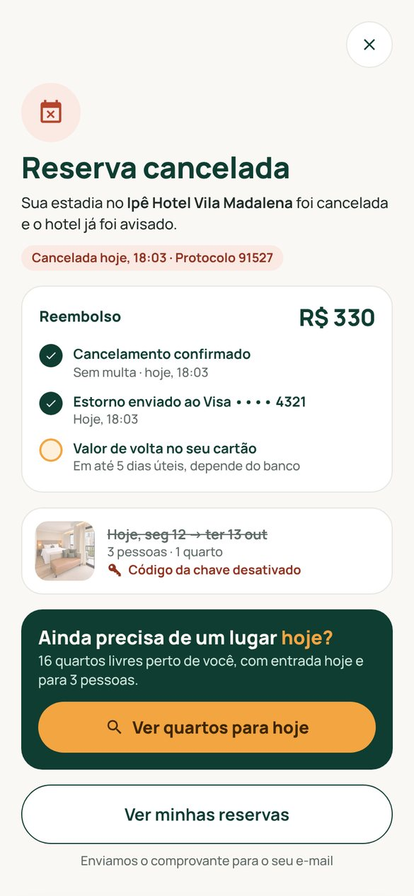

Mudança 01
Cancelar agora tem começo, meio e fim
O que aconteceu: as 4 pessoas cancelaram e caíram de novo em “Reserva confirmada!”. Duas ficaram sem saber se tinha dado certo.
O que eu mudei: um fluxo só pra isso. Primeiro você vê quanto volta e até que horas é grátis; depois aparece “Reserva cancelada”, com o caminho do reembolso e a chave desativada. Em Reservas, ela fica marcada como cancelada.

